THREAD: Task‑Specific Hierarchical Reasoning for Adaptive DLO Routing
Video
Abstract
Long-horizon manipulation of deformable linear objects (DLOs) requires selecting skills that accommodate object properties, scene geometric constraints, and changing deformation states. One approach is to leverage the perception and reasoning power of vision-language models (VLMs). However, general-purpose VLMs can overlook subtle task-relevant details that determine whether a manipulation skill is appropriate, leading to repeated failures and delayed recovery. We propose THREAD, a hierarchical framework for long-horizon DLO routing that combines a task-specific fine-tuned VLM planner with reinforcement learning (RL)-based manipulation skills. The planner interprets visual observations to select skills suited to the DLO properties and clip geometry while assessing whether the current configuration requires recovery. To acquire this task-specific knowledge, we generate simulation rollouts using an oracle planner. We further relabel recovery decisions using geometric criteria for insertion feasibility, teaching the planner to distinguish configurations that lead to successful insertion from those requiring corrective actions. In closed-loop simulation, THREAD improves routing success over the in-context GPT baseline by 15–32% when DLO properties or clip geometry must be inferred from visual observations. Experiments on a Unitree G1 further validate long-horizon routing with flexible nylon rope and stiff wire.
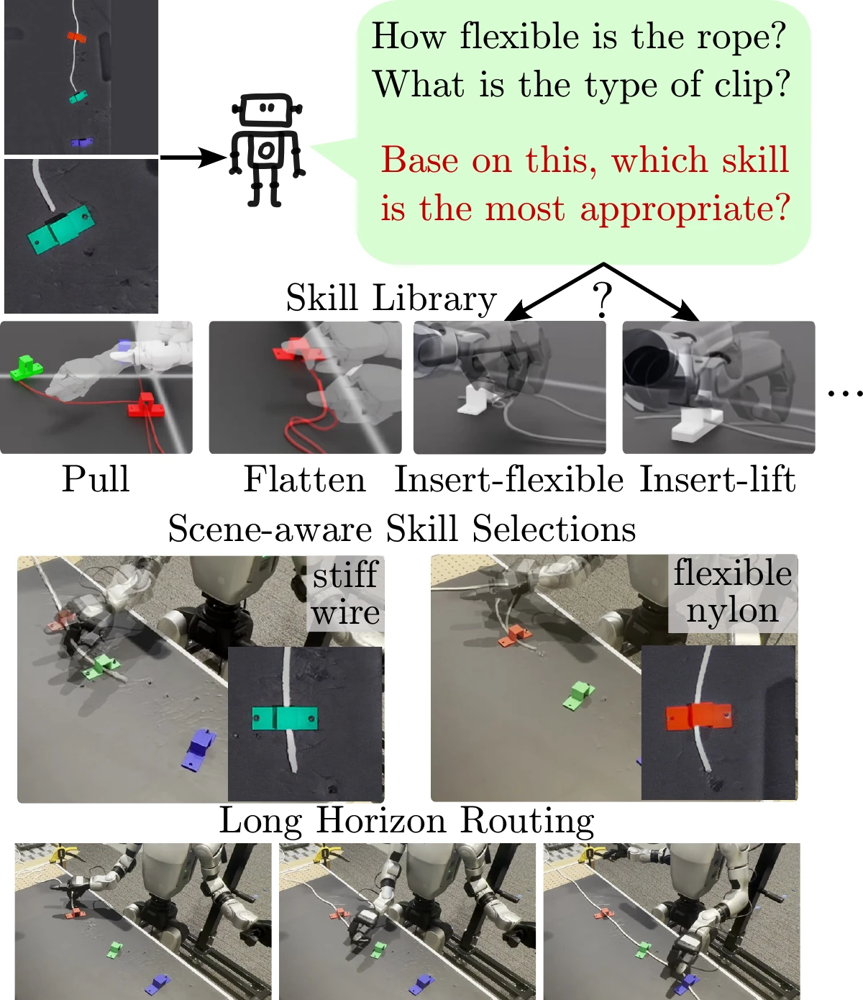
Overview
THREAD separates which skill to run from how to run it. A skill library of RL-trained insertion policies and motion primitives executes the manipulation. A Qwen3-VL-8B planner, fine-tuned on relabeled simulation rollouts, looks at a global view, a zoomed-in view of the target clip and key frames of the previous skill, and decides the next skill, the target clip, and whether the route is complete.
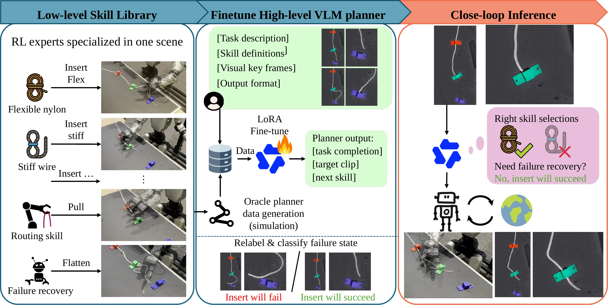
Skill library
Insertion is where the DLO property and the clip geometry matter, so it comes in variants. RL policies specialised to a flexible or a stiff DLO slide the head along the ground into an open clip, and a lift policy raises it over the base of a bottomed clip. Pull carries the DLO on to the next clip, and Flatten straightens it when further insertions are unlikely to succeed.
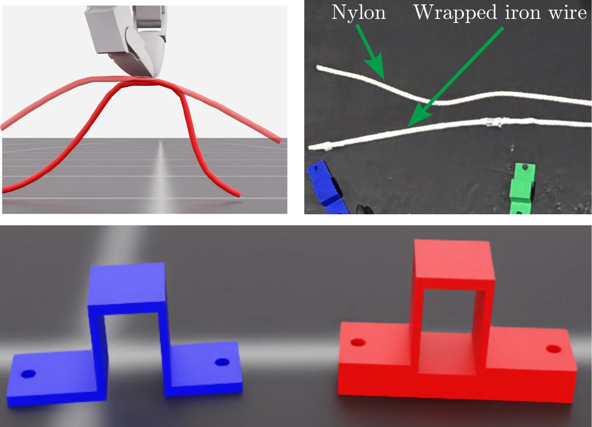
What each skill looks like
Applying the wrong skill
Each insertion policy is specialised. Executed on the wrong DLO or at the wrong clip it can fail outright (Insert-stiff on the flexible DLO succeeds in 0 of 100 episodes) or succeed less often and insert less deeply (Insert-slide on a bottomed clip: 58%), which is why the planner has to recognise the DLO property and the clip geometry before it chooses.
Single-clip insertion when the policy matches or mismatches the scene (100 episodes per row)
| Scene | Policy | Success (%) ↑ | Insertion length (cm) ↑ | Steps ↓ |
|---|---|---|---|---|
| DLO property (open clip) | ||||
| Flexible DLO | Insert-flexible | 91 | 3.65 | 2.99 |
| Flexible DLO | Insert-stiff | 0 | −4.84 | 5.50 |
| Stiff DLO | Insert-flexible | 85 | 3.05 | 3.02 |
| Stiff DLO | Insert-stiff | 100 | 9.24 | 2.82 |
| Clip geometry (stiff DLO) | ||||
| Open clip (0 cm base) | Insert-slide | 98 | 8.87 | 2.89 |
| Open clip (0 cm base) | Insert-lift | 85 | 6.07 | 4.64 |
| Bottomed clip (1 cm base) | Insert-slide | 58 | 2.30 | 3.31 |
| Bottomed clip (1 cm base) | Insert-lift | 97 | 6.31 | 2.97 |
Shaded rows use the policy that matches the scene. Insertion length is how far the DLO head passes the clip opening; steps are policy steps per episode. Table II of the paper.
Data collection and relabeling
Planner training data comes from simulation rollouts of an oracle planner with privileged access to the DLO state, the clip geometry and the routing status. To show the planner what a wrong skill looks like in the tasks where the property is hidden, the oracle deliberately executes the mismatched insertion variant on its first attempt at a clip; those steps are removed from the labels, while the decisions that follow keep their correct labels.
The oracle flattens only after a fixed number of failed attempts, whatever the DLO shape. THREAD discards those decisions and relabels flattening from the DLO shape instead: a failed insertion that starts outside a success envelope becomes Flatten, and one that starts inside it is ambiguous and dropped. The envelope is set to keep 99% of the successful insertions, i.e. the insertion that routes a clip together with the at most two attempts right before it.
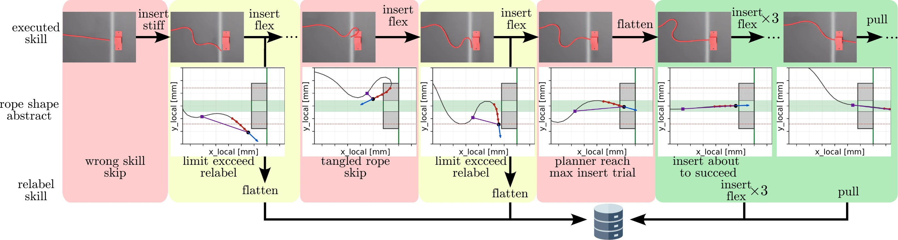
Closed-loop rollouts
Complete routing episodes in simulation with the same skill library and the same prompt. THREAD is the fine-tuned Qwen3-VL-8B planner; the baseline is GPT-5.6-terra queried zero-shot, one decision at a time. The box in the lower-left corner of each video shows every planner decision: whether the route is done, the target clip and the chosen skill (use the ⤢ button under a video to watch it full screen). In the overlays, insert_mid is Insert-flexible and mid is the flexible DLO. The top banner names the scene and episode (sNN epN), the environment (CLOSE marks the clip-geometry setting), the number of routed clips (routed=) and the termination code (fail=; 0: the planner declared completion, 4: the arm could not reach a commanded pose).
Hidden DLO property
Flexible DLO, open clips. Same scene and same initial state for both planners.
Hidden clip geometry
Stiff DLO, a mix of open and bottomed clips. The two episodes come from different scenes; THREAD routes 74.7% of the episodes in this setting.
Recovering earlier
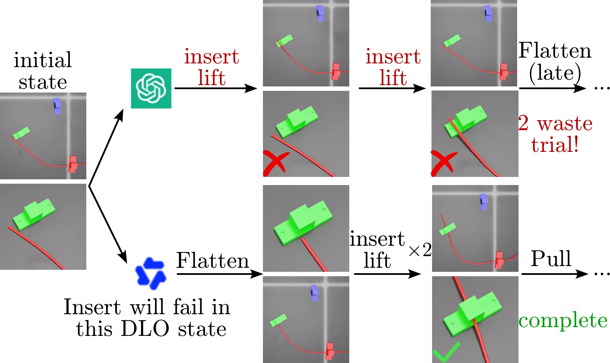
Closed-loop routing results (Table IV of the paper)
| Given DLO property | Hidden DLO property | Hidden clip geometry | |||||||
|---|---|---|---|---|---|---|---|---|---|
| Planner | SR ↑ | Clips ↑ | FI* ↓ | SR ↑ | Clips ↑ | FI* ↓ | SR ↑ | Clips ↑ | FI* ↓ |
| THREAD (Qwen3-VL-8B LoRA) | 63.6 | 81.8 | 1.53 | 59.1 | 80.8 | 1.72 | 74.7 | 89.3 | 2.39 |
| THREAD w/o failure data | – | – | – | 56.1 | 79.3 | 1.26 | 72.0 | 84.4 | 2.03 |
| GPT-5.6-terra (multi-turn) | 60.6 | 74.7 | 1.80 | 43.9 | 59.1 | 1.73 | 42.7 | 68.0 | 2.70 |
| GPT-5.6-terra (zero-shot) | 30.8 | 62.1 | 3.99 | 21.2 | 48.0 | 4.17 | 29.3 | 60.0 | 5.70 |
| Symbolic band planner (no VLM) | – | – | – | 50.0 | 72.2 | 1.13 | 60.0 | 76.4 | 1.81 |
Values as reported in Table IV of the paper. SR: routing success rate (%). Clips: routed clip slots (%). FI*: failed insertions per routed clip. SR and Clips use 66 episodes per planner in the two DLO settings (65 for zero-shot GPT when the DLO is given) and 75 in the clip-geometry setting. Bold marks the best learned planner; the privileged symbolic planner, which reads the simulator state, is excluded.
Real-world experiments
Seven routing trials on a Unitree G1 with a flexible nylon rope and a fabric-wrapped stiff iron wire; five of them route all three clips. The third video is a demo routing an LED strip.
Setup
The G1 runs with its waist locked and its Dex3-1 hands fitted with custom toothed fingertips for pinch grasps. A top-down camera serves the planner: the background is inpainted and the target clip is detected, giving a global view and a zoomed-in crop. A head-mounted camera with SAM3 segmentation provides the DLO particles and clip poses that the insertion policy acts on.
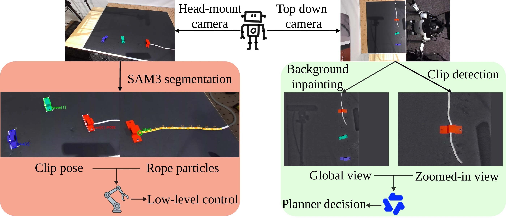
Hardware and camera views
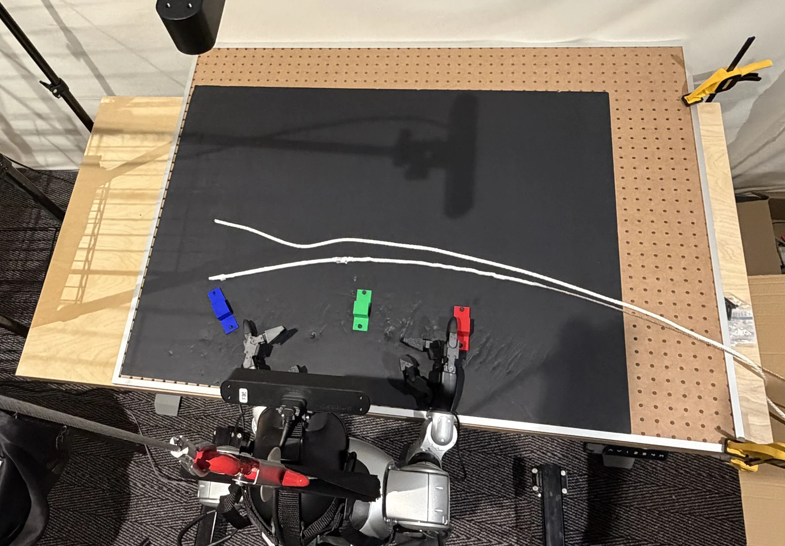
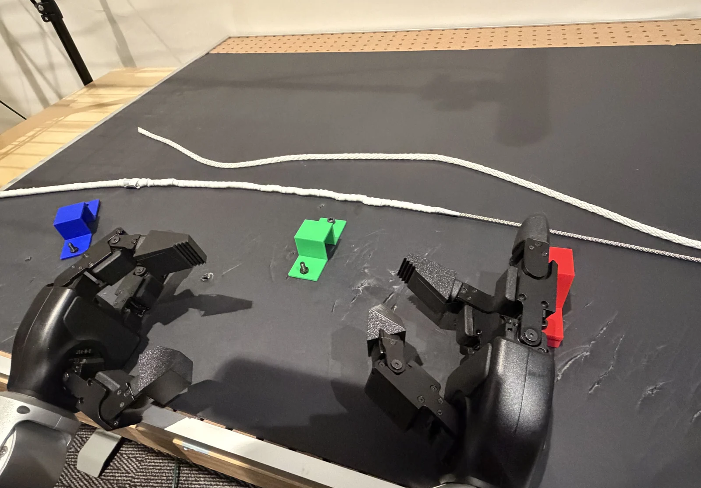
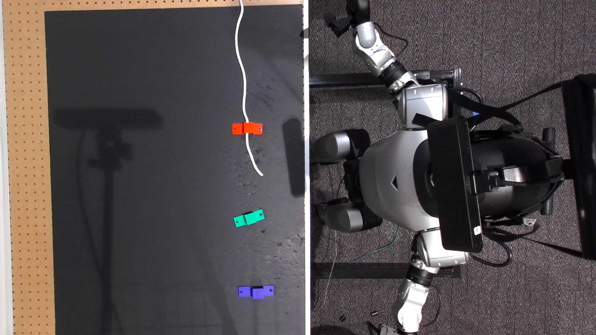
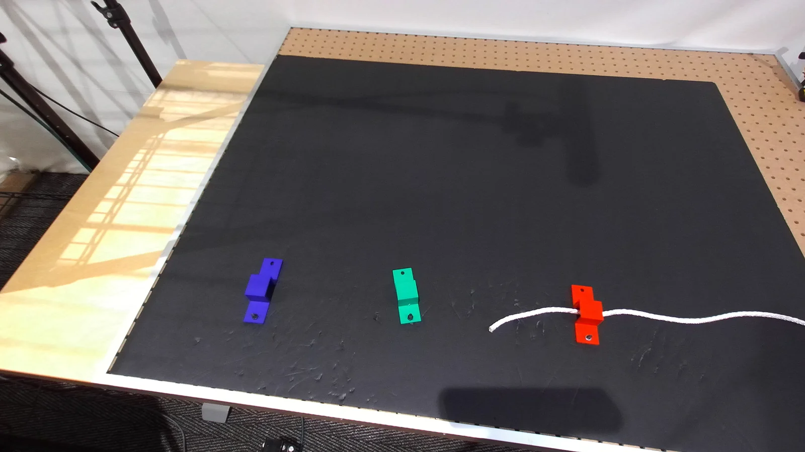
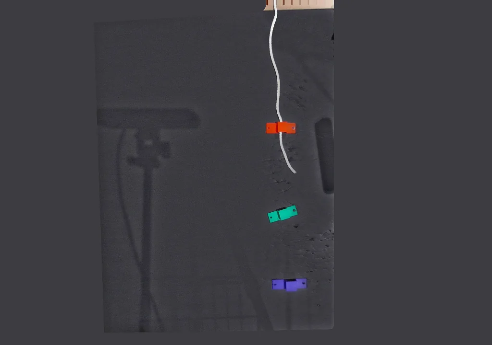
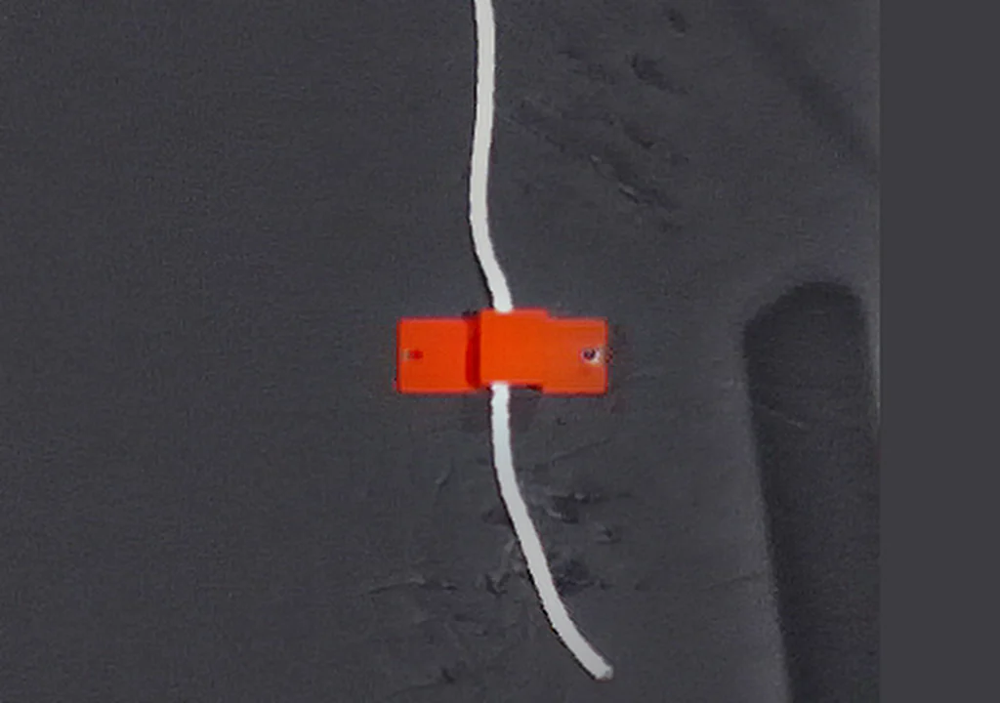
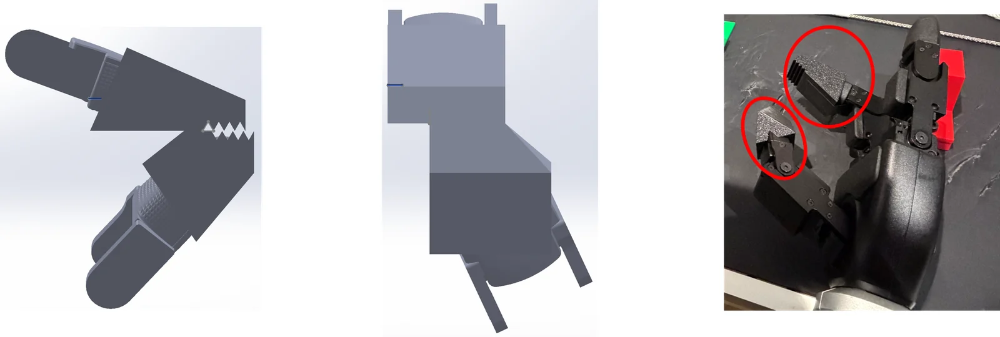
Gallery
Supporting material beyond the figures and tables of the paper.
Reachability of the G1 arm (waist locked vs. unlocked)
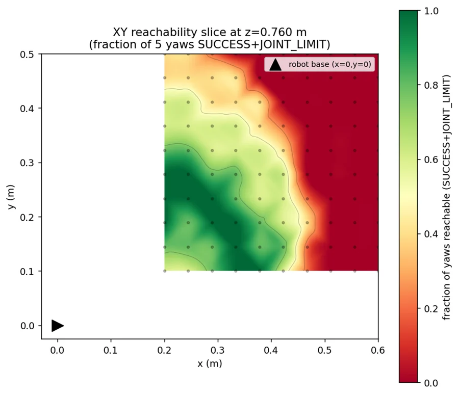
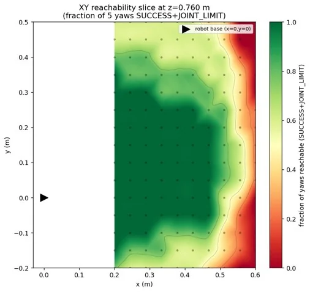
Fraction of five hand yaws reachable at table height (z = 0.76 m) over the workspace in front of the robot (base at the origin). The two maps were computed with different grids and axis ranges. The real-robot experiments run with the waist locked.
Why the multi-turn GPT baseline fails (failure causes per task)
| Task | Episodes | Success | Failed | Unreachable pose | Decision budget used up | Planner stopped early |
|---|---|---|---|---|---|---|
| Given DLO property | 66 | 40 (60.6%) | 26 | 17 (65.4%) | 7 (26.9%) | 2 (7.7%) |
| Hidden DLO property | 66 | 29 (43.9%) | 37 | 26 (70.3%) | 6 (16.2%) | 5 (13.5%) |
| Hidden clip geometry | 75 | 32 (42.7%) | 43 | 5 (11.6%) | 12 (27.9%) | 26 (60.5%) |
Successes are counted as in Table IV; percentages of the failure causes are shares of the failed episodes, and the most frequent cause in each task is highlighted. Unreachable pose: the arm could not reach a commanded waypoint and the reset recovery failed. Decision budget: 50 planner decisions without completing. Stopped early: the planner declared the task finished before all clips were routed. No episode ended in a collision, a wrong clip order or an unavailable skill. On the two open-clip tasks, most failures of this baseline are reachability failures rather than planning errors.
Where zero-shot GPT goes wrong in open loop (accuracy per output field)
| Task | Done flag | Target clip | Skill | All three (exact match) |
|---|---|---|---|---|
| Given DLO property | 100 | 86 | 79 | 79 |
| Hidden DLO property | 100 | 96 | 56 | 56 |
| Hidden clip geometry | 93 | 94 | 48 | 48 |
GPT-5.6-terra, zero-shot, on the 100 held-out decisions per task of Table III (%). The general-purpose model locates the target clip and judges completion well; the skill is what it gets wrong. With the clip geometry hidden, it answers none of the 25 held-out Insert-slide decisions correctly.
Insertion variants chosen on the real robot (hidden DLO property)
| DLO in the trial | Insertion decisions | Insert-flexible | Insert-stiff | Matching variant |
|---|---|---|---|---|
| Flexible nylon rope (4 trials) | 35 | 17 | 18 | 48.6% |
| Fabric-wrapped iron wire (2 trials) | 9 | 2 | 7 | 77.8% |
Counted from the planner's logged decisions in four nylon-rope and two iron-wire trials, the trials behind the percentages reported in the paper. Across both DLOs the planner leans towards Insert-stiff (25 of 44 insertion decisions), so the higher agreement on the wire partly reflects that preference. As discussed in the paper, the clips are arranged in a near-straight line to stay within the robot's reach, which leaves the DLO nearly straight for much of the routing and may hide the visual cues to its flexibility.
Failed insertions per routed clip, and insertions spent on clips that are never routed
| Given DLO property | Hidden DLO property | Hidden clip geometry | ||||
|---|---|---|---|---|---|---|
| Planner | FI* ↓ | Unrouted share | FI* ↓ | Unrouted share | FI* ↓ | Unrouted share |
| THREAD | 1.53 | 37% | 1.72 | 42% | 2.39 | 23% |
| THREAD w/o failure data | – | – | 1.26 | 41% | 2.03 | 36% |
| GPT-5.6-terra (multi-turn) | 1.80 | 42% | 1.73 | 50% | 2.70 | 47% |
| GPT-5.6-terra (zero-shot) | 3.99 | 25% | 4.17 | 33% | 5.70 | 34% |
| Symbolic band planner (no VLM) | – | – | 1.13 | 70% | 1.81 | 56% |
FI*: on every clip an episode routes, the insertion that routes it and the at most two insertions immediately before it count as successful; every other insertion on that clip is a failed insertion. FI* divides the failed insertions by the number of routed clips. Unrouted share: the fraction of all insertions spent on clips the episode never routes, which FI* does not see. The symbolic planner's low FI* comes with the largest unrouted share: most of its insertions go into clips it never routes.
BibTeX
@inproceedings{thread2027,
title = {THREAD: Task-Specific Hierarchical Reasoning for Adaptive DLO Routing},
author = {Anonymous Authors},
booktitle = {Submission to the IEEE International Conference on Robotics and Automation (ICRA)},
year = {2027},
note = {Author information omitted for double-anonymous review}
}